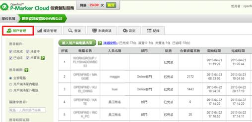
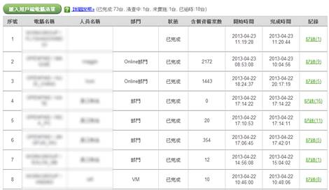
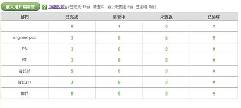
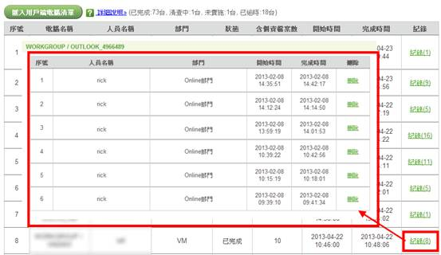

（1） 點選功能列中的用戶管理按鈕。

（2） 於畫面左方設定搜尋條件，條件說明如下：
- 搜尋條件
|
項目 |
說明 |
|
已完成 |
目前已完成盤點的電腦 |
|
清查中 |
目前正在進行盤點的電腦 |
|
已逾時 |
已開始進行盤點，但超過60 小時仍未上傳盤點結果(主要原因可能是電腦中途關機、或是連線異常所致) |
|
未實施 |
尚未開始進行盤點的電腦(使用此功能前需先匯入用戶端清單，相關說明請見<如何匯入用戶端清單？>章節) |
- 搜尋範圍
使用此功能前需先匯入用戶端清單，請見<如何匯入用戶端清單？>章節。
|
項目 |
說明 |
|
全部電腦 |
列示出所有電腦 |
|
用戶端清單內電腦 |
列示出包含於用戶端清單的電腦 |
|
用戶端清單外電腦 |
列示出用戶端清單外的電腦 |
- 關鍵字搜尋
管理者可輸入電腦名稱、部門、人員名稱進行查詢。
- 搜尋時間區間
管理者可以選定希望觀看的時間範圍。
（3） 搜尋條件設定完畢後，點選「人員列表」或「部門統計」即可開始搜尋，若點選「人員列表」電腦會將搜尋結果以人員列表方式列出，若選部門統計，則會以部門為單位列出結果。
- 人員列表模式：列表方式顯示每一個人員目前盤點狀況。

- 部門統計模式：部門為單位顯示盤點狀況。

（4） 點選記錄欄位中的「紀錄」二字，可以觀看該人員的盤點歷程，並可刪除其中的盤點紀錄。
